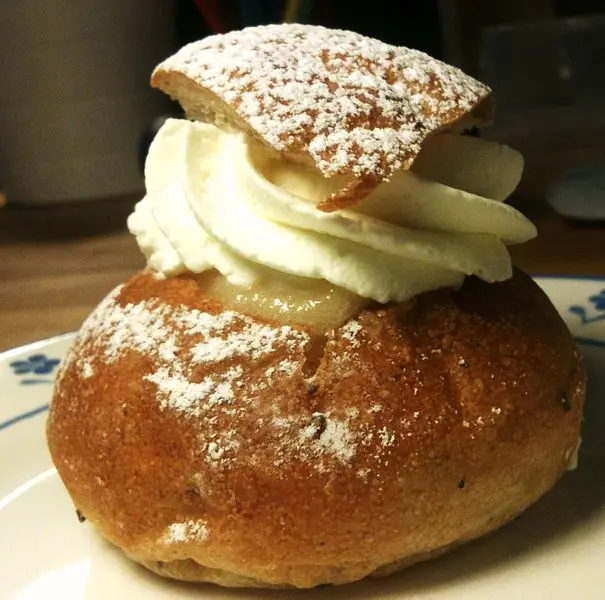
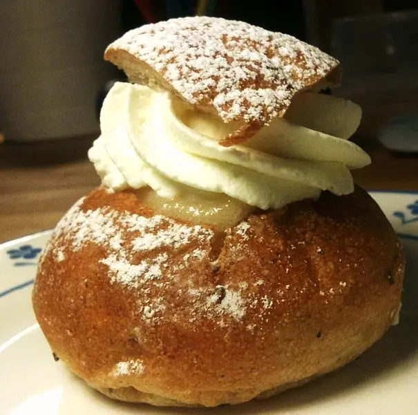

Pratos típicos
A culinária da Suécia baseia-se nas carnes e laticínios, peixe, bagas
silvestres, como o mirtilo e o arando-vermelho, com as quais se fazem
compotas que, muitas vezes acompanham a comida. As batatas são o
acompanhamento normal da comida sueca, cozidas ou em puré, embora
também se usem outros vegetais como os pepinos, frescos ou em picles.
Na Suécia come-se uma grande variedade de pães, desde os macios aos
crocantes, principalmente de centeio, mas também de trigo (ou da sua
variedade selvagem, a espelta), cevada, de massa escura ou clara,
usando muitas vezes farinha integral e mesmo com massa azeda. Também
são muito apreciados os bolos e biscoitos. No norte do país, é
consumida a carne de rena, e no sul, há maior utilização de legumes e
verduras. Os peixes mais consumidos são o bacalhau, a sarda, o arenque
e o salmão. Uma especialidade da Suécia, é o smörgåsbord, um bufê
reunindo variadas iguarias. Tradicionalmente, os suecos são bastante
abertos às influências culinárias de outros países, como se pode ver
pelo consumo de pizza, hamburger, e comida chinesa.

 
